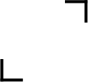

Tap to continue
Film Camera
Add a shortcut to your home screen to open the app from your icon.
Add to Home Screen
Continue to app
00:00
☰
Portra 400
↑
50mm
LENS

Video
Photo
Upload
1×
✕
ROLL
Select
No shots yet
Delete
Download
✕
Delete
Download
Drop photo here
or click to browse
Download
Close